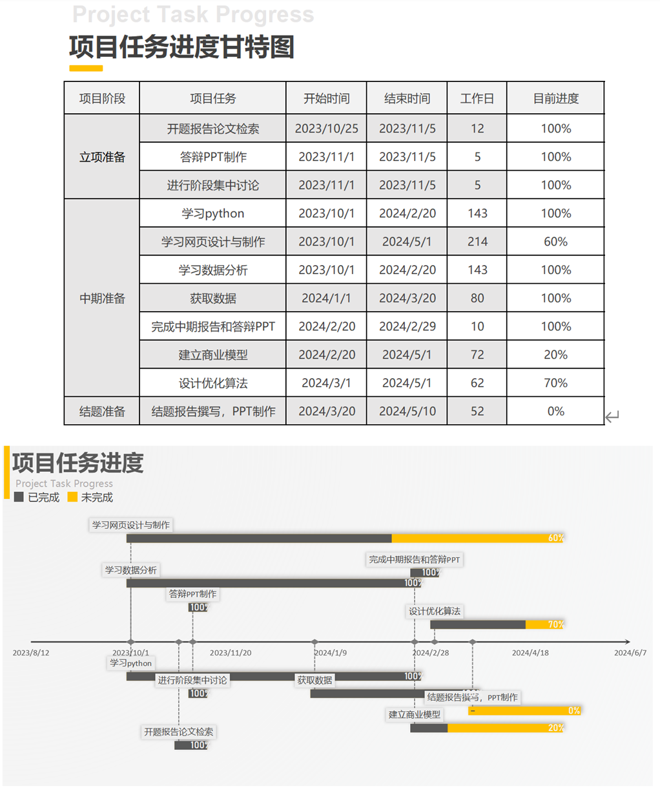

目前，本小组已成功运用多种机器学习模型，包括逻辑回归、随机森林、XGBoost和LightGBM等，对经过完整数据处理的数据库进行了建模与预测工作。经过一系列精心设计和实施的数据处理步骤，我们确保了数据的准确性、一致性和有效性，为后续的建模工作奠定了坚实的基础。.45亿，较2021年12月增长319万，占网民整体的79.2%，网购已经成为一种消费习惯，电商成为民众普及的商业模式。
在建模过程中，我们根据数据的特性和问题的需求，选择了合适的模型进行训练和调优。通过不断调整模型的参数和结构，我们成功提高了模型的预测性能，并确保了模型的稳定性。
接下来，本报告将具体展示我们目前工作内容与成果。我们将呈现模型在训练集和验证集上的性能表现，包括准确率、召回率等指标。此外，我们还将对模型的性能进行深入分析，探讨不同模型之间的优缺点和适用场景。通过对比分析，我们可以更好地理解各种模型的特性，为后续的研究和应用提供有益的参考。